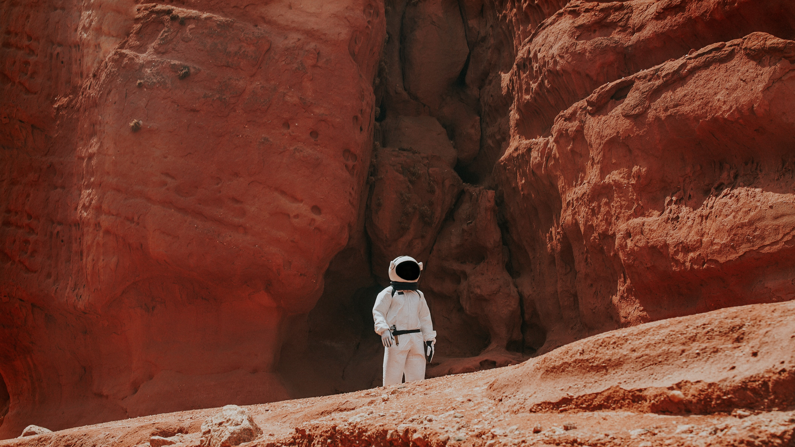

A new planet, a new beginning
This hypothetical super-Earth-sized planet would have a predicted mass of five to ten times that of the Earth, and an elongated orbit 400 to 800 times as far from the Sun as the Earth. Konstantin Batygin and Michael E.
In 1781, William Herschel was looking for binary stars in the constellation of Taurus when he observed what he thought was a new comet. Its orbit revealed that it was a new planet, Uranus, the first ever discovered. Understanding planetary habitability is partly an extrapolation of the conditions on Earth, as this is the only planet known to support life. The moons of some gas giants could potentially be habitable. Mars, with its rarefied atmosphere, is colder than the Earth would be if it were at a similar distance from the Sun. New Horizons is so far out in the Kuiper Belt that sending data back to Earth takes significant time. Investigators have said it will take roughly 20 months for all of the MU69 data to flow back to Earth, which means new information will continue to arrive up until late 2020
The planet is one of the oldest known extrasolar planets, believed to be about 12.7 billion years old.
A super-Earth is an extrasolar planet with a mass higher than Earth's, but substantially below those of the Solar System's ice giants, Uranus and Neptune, which are 14.5 and 17 times Earth's, respectively.The answer is, we don't know. The name "Earth" is derived from both English and German words, 'eor(th)e/ertha' and 'erde', respectively, which mean ground. But, the handle's creator is unknown. One interesting fact about its name: Earth is the only planet that wasn't named after a Greek or Roman god or goddess.